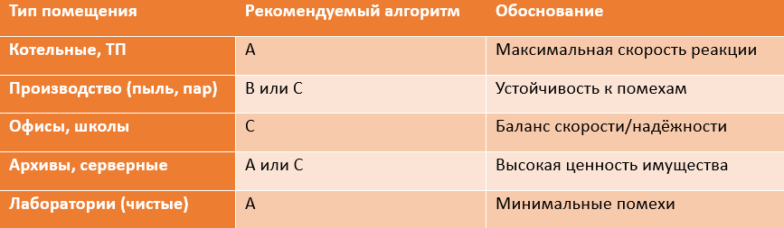

Интеграция с системами пожарной безопасности

Современное здание можно представить как живой организм. В нормальном режиме каждая система работает самостоятельно: СКУД (система контроля и управления доступом) контролирует доступ, видеонаблюдение следит за обстановкой, пожарная сигнализация мониторит датчики. Но при возникновении пожара, в момент наступления чрезвычайной ситуации - все эти системы должны превратиться в единый механизм спасения людей.
Интеграция всех систем с пожарной безопасностью - это не "сопряжение", а создание единого алгоритма безопасности. И сегодня мы разберем, как проектировать этот алгоритм от первой линии взаимодействия до финальной приемки системы.
Когда датчик улавливает дым, его работа только начинается. Пожарная сигнализация (АПС) - это своего рода мозг, который рассылает приказы всем инженерным системам здания.
Главная задача интеграции всех систем - обеспечить безопасную эвакуацию людей. Для этого нужно:
- Включить то, что спасает (Дымоудаление, Оповещение).
- Выключить то, что мешает (Вентиляция, СКУД, Лифты).
Во время пожара ничего не должно мешать людям для эвакуации. Так на путях эвакуации Раздвижные полотна дверей при пожаре должны автоматически приводиться в открытое положение по сигналам системы автоматической пожарной сигнализации (СП 1.13130).
Переходя к систематизации, сначала рассмотрим, какие именно системы подлежат интеграции, а затем разберём технические решения для каждой пары взаимодействующих систем.
Взаимодействие систем с пожарной сигнализацией
СПС (система пожарной сигнализации) должна обеспечивать выдачу инициирующих сигналов управления в следующие системы (при их наличии):
СОУЭ - систему оповещения и управления эвакуацией людей при пожаре;
АУП - автоматическую установку пожаротушения;
СПДЗ - систему противодымной защиты;
СПИ - систему передачи извещений;
СКУД - систему контроля и управления доступом;
системы инженерно-технического обеспечения зданий, сооружений;
АСУ ТП, ПАЗ - автоматизированную систему управления технологическим процессом и противоаварийную защиту.
СОУЭ должна осуществляться автоматически по сигналу из зоны контроля системы пожарной сигнализации или зоны противопожарной защиты АУП, пожар в которой обнаружен средствами СПС или АУП.
Общее количество пожарных извещателей (ИП), подключаемых к одному приборов приемно-контрольных пожарных (ППКП), не должно превышать 512, при этом суммарная контролируемая ими площадь не должна превышать 12 000 м2.
Алгоритмы принятия решения о пожаре
Алгоритмы - программно-аппаратные логики работы приёмно-контрольных приборов пожарной сигнализации (ППКП), определяющие условия выдачи сигнала "ПОЖАР" на основании срабатывания пожарных извещателей в контролируемой зоне помещения.
Есть три используемых алгоритма A, B или C. Принятие решения о возникновении пожара в заданной зоны контроля системы пожарной сигнализации (ЗКСПС) должно осуществляться по одному из них.
Алгоритм А – самый простой
Условие срабатывания: Алгоритм A должен выполняться при срабатывании одного ИП без осуществления процедуры перезапроса.
Условие реализации алгоритма A: в ЗКСПС защищаемое помещение должно контролироваться не менее чем (один из вариантов):
- двумя автоматическими безадресными ИП при условии, что каждая точка помещения (площадь) контролируется двумя ИП;
- одним автоматическим адресным ИП при условии, что каждая точка помещения (площадь) контролируется одним ИП.
Алгоритм В – повышенная надежность срабатывания
Условие срабатывания - должен выполняться (один из вариантов):
- при срабатывании автоматического ИП и дальнейшем повторном срабатывании этого же ИП за время не более 60 с, после процедуры автоматического перезапроса;
- при срабатывании автоматического ИП и (или) дальнейшем повторном срабатывании этого же ИП за время не более 60 с, после процедуры автоматического перезапроса, или срабатывании другого автоматического ИП той же ЗКСПС за время не более 60 с от момента срабатывания первого ИП той же ЗКСПС.
В качестве ИП для алгоритма B могут применяться автоматические ИП любого типа при условии информационной и электрической совместимости для корректного выполнения процедуры перезапроса.
Условие реализации алгоритма В: аналогично алгоритму А
Алгоритм C – лучше выдерживает помехи
Условие срабатывания: должен выполняться при срабатывании одного автоматического ИП и дальнейшем срабатывании другого автоматического ИП той же или другой ЗКСПС, расположенного в этом помещении.
При использовании адресных автоматических ИП и получении сигнала "Неисправность" от одного или нескольких адресных автоматических ИП в помещении допускается формировать сигнал "Пожар" при срабатывании одного адресного автоматического ИП.
При использовании безадресных автоматических ИП, подключенных в разные, но взаимозависимые линии связи одной ЗКСПС, в случае наличия извещения о неисправности одной линии связи или нескольких из них допускается формировать сигнал "Пожар" при срабатывании одного безадресного автоматического ИП.
Защиту от ложных срабатываний следует обеспечивать одним или комбинацией следующих мероприятий:
- выбором типа и класса ИП;
- применением ИП, которые не реагируют на факторы, похожие, на пожар, и присутствующие при нормальном функционировании объекта (пыль, пар, резкие перепады температуры (например, при открытии дверей), сценический дым, дым и излучение от сварочных работ, солнечное излучение и другие);
- использованием мультикритериальных ИП;
- применением экранированных кабелей, кабелей типа "витая пара", оптоволоконных линий связи;
- использованием для принятия решения о пожаре алгоритмов B или C;
- равномерным распределением ИП по площади при использовании алгоритма C и соблюдении минимального расстояния между ИП не менее 1,2 метра;
- размещением ИП пламени или ИП с видеоканалом обнаружения с разных направлений к зоне контроля при использовании алгоритма C.
Условие реализации алгоритма C: защищаемое помещение должно контролироваться не менее чем двумя автоматическими ИП при условии, что каждая точка помещения (площадь) контролируется не менее чем двумя ИП.
Выбор конкретного алгоритма зависит от характеристик, приведенных в задании на проектирование, таких как:
- площадь помещения – для небольших помещений может быть достаточно алгоритма А;
- условия эксплуатации помещения, например, влажные, дымные (используется искусственный сценический дым или другие виды), пыльные;
- категория помещения – больничная лаборатория, школа, склад;
- количество извещателей в зоне
Примеры использования алгоритмов для разных типов помещения приведены в таблице:

Выбор алгоритма также зависит от приоритетов заказчика, уточните заранее, что ему важнее быстрота реакции или точность срабатывания.
Система оповещения и управления эвакуацией людей
Данная система сигнализирует о начале пожара и необходимости эвакуации. Она должна срабатывать автоматически при поступлении сигнала из ЗКСПС или ЗПЗ АУП.
Звуковые сигналы СОУЭ должны обеспечивать общий уровень звука (уровень звука постоянного шума вместе со всеми сигналами, производимыми оповещателями) не менее 75 дБА на расстоянии 3 м от оповещателя, но не более 120 дБА в любой точке защищаемого помещения (СП 3.13130).
Способы оповещения:
- звуковой (сирена, тонированный сигнал и др.);
- речевой (передача специальных текстов);
- световой. К нему относятся световые мигающие оповещатели, световые оповещатели "Выход", эвакуационные знаки пожарной безопасности, указывающие направление движения и световые оповещатели, которые указывают направление движения людей, с изменяющимся смысловым значением.
Требуемый тип СОУЭ определяется по значению нормативного показателя, например, для больниц – это число койко-мест (СП 3.13130.2009).